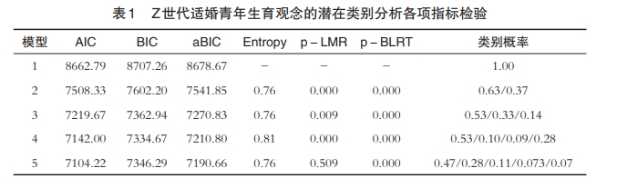
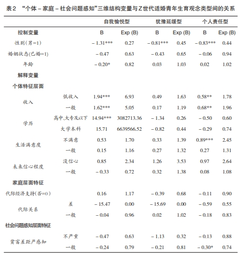

这篇文章主要是提供一个LCA分析模板，大家可以根据这个模板来写自己的LCA分析报告。
统计工具和分析方法
本研究的数据分析流程细致而全面，旨在深入了解Z世代适婚青年群体的生育观念及其影响因素。具体来说，数据分析流程分为以下两个主要步骤：
第一步：潜在类别分析
在这一步骤中，我们使用了专业的统计软件Mplus 7.0来开展潜在类别分析（Latent Class Analysis, LCA）。LCA是一种强大的统计方法，能够帮助我们识别隐藏在观察变量背后的潜在类别。通过对Z世代适婚青年群体的生育观念进行LCA，我们能够找出具有相似生育观念的群体，并对这些群体进行命名和描述。
在进行LCA时，我们参考了多种模型拟合指标，包括AIC（Akaike Information Criterion）、BIC（Bayesian Information Criterion）和aBIC（adjusted Bayesian Information Criterion）。这些指标帮助我们评估不同类别模型的拟合优度，从而确定最优的类别数量和类别概率。此外，我们还计算了Entropy值，以评估模型分类的精确程度。Entropy值越高，说明分类的准确性越好。
第二步：多元Logistic回归分析
在确定了不同生育观念类型之后，我们进一步建立了多元Logistic回归模型。这一模型允许我们从多个维度探索影响Z世代适婚青年生育观念的因素。具体来说，我们从以下几个方面进行了分析：
个体特征：包括收入、学历、生活满意度和未来信心程度等。这些变量反映了个体在经济、教育和心理方面的状况，可能对生育观念产生重要影响。
家庭特征：包括代际经济支持和代际关系等。家庭的经济状况和支持力度，以及家庭成员之间的关系，都可能影响年轻人的生育决策。
社会问题感知：包括对贫富差距、教育问题、住房问题和社会保障问题的感知严重性。这些社会问题的感知程度可能会影响年轻人对生育的态度和决定。
通过多元Logistic回归分析，我们可以量化这些因素对不同生育观念类型的影响程度，从而为相关政策制定提供科学依据。
本研究通过两个步骤的数据分析，不仅识别出了Z世代适婚青年群体中不同的生育观念类型，还深入探讨了影响这些生育观念的各种因素。这为我们理解Z世代的生育观念及其背后的复杂机制提供了有力的支持。
数据来源和样本介绍
这篇研究的样本情况如下：
- 数据来源：研究数据来源于2020年中国家庭追踪调查（CFPS）。
- 样本覆盖范围：样本覆盖了中国25个省、市、自治区。
- 样本数量：共有28,590份有效样本，具有全国代表性。
- Z世代定义：研究中定义的Z世代是指在1995年至2010年间出生的人群。
- 样本筛选：研究选取了出生年份在1995年至2010年之间的样本，并剔除了不在法定婚龄内的个体（男性不超过22周岁，女性不超过20周岁）。此外，还剔除了对相关问题回答“不知道”或“拒绝回答”的个体。
- 最终样本量：经过筛选后，保留了1,025个Z世代适婚青年群体的有效样本用于研究。
性别分布：男性552人（53.9%），女性473人（46.1%）。
年龄分布：22岁252人（24.6%），23岁244人（23.8%），24岁237人（23.1%），25岁292人（28.5%）。
婚姻状态：未婚839人（81.9%），已婚186人（18.1%）。
LCA 潜类别分析
指标
本研究的焦点是因变量——Z世代适婚青年群体的生育观念。具体而言，我们通过调查问卷设计了9个题项来捕捉受访者的生育观念，这些题项分别是：ME201（生养子女是为了在自己年老时获得帮助）、ME202（生养子女是为了延续家族血脉）、ME203（生养子女是为了从经济上支持家庭）、ME204（生养子女是为了享受孩子成长的喜悦）、ME205（生养子女是为了体验子女陪伴的快乐）、ME206（生养子女是为了感受有小宝宝的喜悦）、ME207（生养子女是为了让家庭在生活中占据更重要地位）、ME208（生养子女是为了增强自己的责任感）以及ME209（生养子女是为了加强亲属之间的联系）。
为了更有效地进行后续针对Z世代适婚青年群体生育观念的潜在类别分析，我们决定剔除那些选择“5=既不同意也不反对”的样本，因为它们可能不提供明确的态度倾向。同时，我们将选择“1=十分不同意”和“2=不同意”的样本重新编码为“0”，以明确表示受访者对相应题项的反对态度；相应地，我们将“3=同意”和“4=十分同意”的样本重新编码为“1”，以突出受访者对相应题项的赞同态度。这样的处理将使我们能够更清晰地分析Z世代适婚青年群体的生育观念模式。
确定分类个数
Z世代适婚青年生育观念的潜在类别分析结果汇总于下表。研究发现，随着潜在类别数量的增加，模型的AIC（赤池信息量准则）、BIC（贝叶斯信息量准则）以及aBIC（调整后的贝叶斯信息量准则）值均呈现下降趋势，同时Entropy（熵）值逐渐增大，表明模型拟合度在提升。然而，当潜在类别数量达到5个时，模型BIC值出现反常增长，Entropy值也降至0.8以下，且LMR（似然比检验）对应的p值未通过显著性检验。因此，综合考虑模型拟合度和可解释性，将Z世代适婚青年的生育观念划分为4种类型最为合适。这4种类型所对应的类别概率分别为53%、10%、9%和28%。
在确定了Z世代适婚青年的四种生育观念类型后，本研究深入分析了这些类型在九个特定题项上的条件概率分布模式，并据此进行了详细分类与命名，如下图所直观展示。以下是四种生育观念类型的重新阐述及命名依据：
- 家庭责任型（占比53%）：此类型在QME201、QME202、QME207及QME209题项上展现出极高的条件概率（均超过0.9），显著高于其他题项。这一特征凸显了该类青年对家庭责任的深刻认同与承担，以及对传统生育观念的坚守。因此，该类型被命名为“家庭责任型”，以体现其对家庭延续与责任担当的强调。
- 自我愉悦型（占比10%）：在QME204、QME205及QME206题项上，此类型的条件概率均高达0.95以上，而与之相对的强调家庭观念的题项上则显著低于0.5。这一对比鲜明地反映了该类青年将生育视为个人愉悦与满足的来源，而非单纯的家庭责任或社会期望。因此，命名为“自我愉悦型”，以突出其对生育体验的个性化追求。
- 犹豫延缓型（占比9%）：从图1可见，此类型在所有题项上的条件概率均徘徊在0.5以下，表明其在面对生育决策时表现出普遍的犹豫与推迟态度。这种心态反映了该群体对于生育责任的审慎考量与不确定感，故命名为“犹豫延缓型”，以概括其生育观念的特点。
- 个人责任型（占比28%）：在QME208题项上，此类型的条件概率接近1，同时在QME203题项上则接近0。这一极端对比表明，该类青年在生育问题上极为重视个人的责任感与自主权，同时相对淡化了对子女经济支持与家庭贡献的传统期待。因此，命名为“个人责任型”，以强调其在生育观念上的独立与自我导向。
逻辑回归
变量介绍
根据社会生态系统理论，Z世代适婚青年的生育观念受到个体、家庭和社会问题感知三个维度的影响。具体而言：
个体特征层面：
- 收入：收入水平越低的群体，越可能倾向于强调生养子女过程中的个人责任。
- 学历：教育程度越低的群体，越有可能具有自我愉悦型生育观。
- 生活满意度：生活满意度越低的群体，越可能倾向于强调生养子女过程中的个人责任。
- 未来信心程度：对未来信心不足的群体，可能更倾向于具有自我愉悦型生育观。
家庭特征层面：
- 代际经济支持：缺乏代际经济支持的群体，可能更倾向于具有自我愉悦型生育观。
- 代际关系：代际关系的好坏对生育观念的影响不显著。
社会问题感知层面：
- 贫富差距问题感知：对贫富差距问题感知程度越高的群体，越可能具有个人责任型生育观。
- 教育问题感知：对教育问题感知程度越低的群体，可能更倾向于具有自我愉悦型生育观。
- 住房问题感知：对住房问题感知程度越高的群体，可能更倾向于具有自我愉悦型生育观。
- 社会保障问题感知：对社会保障问题感知程度越严重的群体，可能更倾向于形成犹豫延缓型生育观念。
逻辑回归模型
以下是对原文的改写，保持了原意并调整了表述形式：
根据上表所呈现的研究结果，与主流的“家庭责任型”生育观念相比，“自我愉悦型”生育观念在多个维度上展现出显著的关联性。具体而言，性别差异显著，女性相较于男性更倾向于持有“自我愉悦型”生育观；年龄因素亦不容忽视，随着年龄增长，个体可能逐渐减少生育带来的愉悦体验。在个体特征层面，经济和教育水平成为关键变量，低收入及低教育程度的群体更有可能秉持“自我愉悦型”生育观。然而，值得注意的是，家庭层面的特征并未对“自我愉悦型”生育观产生显著影响。
进一步地，当考虑社会问题感知时，研究发现对教育问题关注较少的Z世代青年，以及对住房问题感知更为严重的青年，更可能倾向于“自我愉悦型”生育观。
另一方面，“犹豫延缓型”生育观则主要关联于女性和对社会保障问题严重性的感知。女性相较于男性，更可能表现出对生育的犹豫与延迟态度；同时，社会保障问题的感知程度加深，也会增强个体形成“犹豫延缓型”生育观的可能性。与“自我愉悦型”和“家庭责任型”生育观相似，家庭层面的特征在“犹豫延缓型”生育观中并未展现出显著的影响力。
最后，对于“个人责任型”生育观，其显著影响因素包括性别、收入、生活满意度以及对社会贫富差距的感知。女性在这一类型中占据较大比例；低收入和生活满意度低的群体，更倾向于在生育过程中强调个人责任；此外，对贫富差距问题感知深刻的个体，也更容易形成“个人责任型”生育观。同样地，家庭代际层面的特征并未对“个人责任型”生育观产生显著影响。